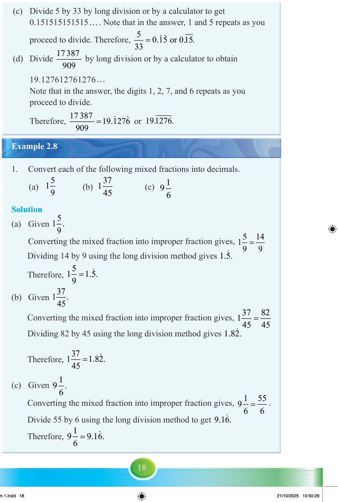

(c) Divide 5 by 33 by long division or by a calculator to get 0.151515151515…. Note that in the answer, 1 and 5 repeats as you proceed to divide.
(d) Divide by long division or by a calculator to obtain 19.127612761276…. Note that in the answer, the digits 1, 2, 7, and 6 repeats as you proceed to divide.
Example 2.8

1. Convert each of the following mixed fractions into decimals.
Solution
=
14 9 1..
=
82 45 1..
= .
55 6 9..